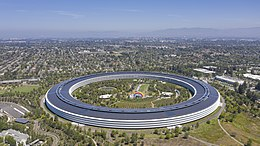

Apple Inc. (NASDAQ: AAPL, LSE: ACP, FWB: APC, ყოფილი Apple Computer, Inc.) — ამერიკული მულტინაციონალური კორპორაცია, აწარმოებს სამომხმარებლო ელექტრონიკასა და მასთან დაკავშირებულ პროგრამულ უზრუნველყოფას. შტაბ-ბინა მდებარეობს აშშ-ის კალიფორნიის შტატის ქალაქ კუპერტინოში. Apple ამზადებს, ყიდის და მხარდაჭერას უზრუნველყოფს პერსონალური კომპიუტერის სერიისთვის, პორტატიული მედია-პლეერებისთვის და სხვა აქსესორებისთვის. Apple ამჟამად ასევე დაკავებულია ახალი ტექნოლოგიური კონცეფციების შექმნით, მათ შორის iPhone-ის, Apple TV-ის, Apple watch-ის და ახალი ოპერაციული სისტემა Mac OS X El Capitan-ის დამუშავებით. კომპანიის ყველაზე ცნობილ პროდუქტთა შორისაა Mac Pro, Mac Mini, iMac, iMac with retina 5k display) პერსონალური კომპიუტერები და დაკავშირებული პერიფერიული მოწყობილობა, პორტატიული მედია-პლეერი iPod-ის სერია (ipod shuffle, iPod Nano, iPod touch) iPhone (iPhone 7 და 7 Plus) ასევე iPad Air, iPad Pro და iPad Mini. Apple-ის ყველაზე განთქმული პროგრამული უზრუნველყოფის პროდუქციაა Mac OS X და iOS ოპერაციული სისტემები და iLife-ის პროგრამების პაკეტი. Apple ასევე მნიშვნელოვანი მწარმოებელი პროფესიონალური აუდიო და კინოინდუსტრიის პროგრამული პროდუქტების, ძირითადად Mac-ის კომპიუტერებისთვის, მათ შორის Final Cut Pro, Logic Pro, Final Cut Studio, და დაკავშირებული ხელსაწყოები. Apple-ში მუდმივად და დროებითად 70,000-მდე ადამიანია დასაქმებული მსოფლიოს გარშემო და მისმა მსოფლიო გაყიდვებმა 2007 ფისკალურ წელს (დასრულდა 2007 წლის 29 სექტემბერს) US$24.01 მილიარდი შეადგინა. რამდენიმე მიზეზის გამო, მათ შორის ყოველმხრივად ესთეტიკური დიზაინით თავისი კონტრკულტურული ინდი ფესვებით, ასევე თავისი სარეკლამო კამპანიებით, Apple-მა გამორჩეული რეპუტაცია მოიპოვა სამომხმარებლო ელექტრონიკის ინდუსტრიაში და კულტივირებული მომხმარებლების პლეადა წარმოშვა, რომლებიც განსაკუთრებულად ლიოალურები და თავდადებულები არიან კომპანიისა და ბრენდის მიმართ, განსაკუთრებით აშშ-ში.
1976–1980: ადრეული წლები Apple დაარსებულ იქნა 1976 წლის 1 აპრილს სტივ ჯობსის, სტივ უოზნიაკის და რონალდ უეინის მიერ (და მოგვიანებით, 1977 წლის 3 იანვარს კორპორაციად გარდაიქმნა უკვე უეინის გარეშე, რომელმაც კომპანიის თავისი წილი ჯობს და უოზნიაკს მიჰყიდა), რათა გაეყიდა Apple I კომპიუტერული აღჭურვილობა. ისინი სტივ უოზნიაკის მიერ ხელით იყო აწყობილი ჯობსის მშობლების სასტუმრო ოთახში, და Apple I საზოგადოების წინაშე პირველად ჰოუმბრიუს კომპიუტერულ კლუბში წარადგინეს. საბოლოოდ 200 კომპიუტერი იქნა აწყობილი. Apple I იყიდებოდა როგორც დედა პლატა (პროცესორით, ოპერატიული დამახსოვრების მოწყობილობით იგივე RAM-ით და ძირითადი ტექსტურ-ვიდეო ჩიპებით) - და არა ისე, რაც დღეს არის მიღებული პერსონალურ კომპიუტერად. კომპანია Apple (Apple) დაარსდა 1976 წლის 1 აპრილს კალიფორნიაში მისი დამფუძნებლები სტივ ჯობსი (Steve Jobs) და სტივ ვოზნიაკი (Stephen Gary Woźniak), ჯერ კიდევ სკოლიდან იცნობდნენ ერთმანეთს. დროთა განმავლობაში კომპანია Apple-ის შეუერთდა მესამე წევრი – რონ ვეინი. 1970-იან წლებში რონ ვეინი იყო კომპანია ატარის (Atari) ერთ-ერთი წამყვანი ინჟინერი. პირველი პროექტი, რომელიც განახორციელეს ჯობსმა და ვოზნიაკმა იყო მოწყობილობა BlueBox. ეს იყო ელექტრონული მოწყობილობა, რომელიც ტელეფონის ქსელში აგზავნიდა იმპულსებს და მწყობრიდან გამოყავდა სატელეფონო სადგური. ამ მოწყობილობით შესაძლებელი იყო მსოფლიოს ნებისმიერ ქვეყანაში უფასოდ დარეკვა. მათ შეძლეს 200-ზე მეტი Bluebox-ის შექმნა და გაყიდვა. 1976 წელს გამოვიდა Apple-ის პირველი კომპიუტერი Apple Computer I. პრეზენტაცია გაიმართა კომპიუტერულ კლუბში Homebrew Computer Club, რითაც ახალგაზრდა კომპანიამ მიიქცია მსოფლიოში პირველი კომპიუტერული მაღაზიის Byte Shop-ის ყურადღება. ამ მოვლენის შედეგად საგრძნობლად გაიზარდა შეკვეთების რაოდენობა და ამიტომ საჭირო გახდა ინვესტიციების მოძიება კომპანიისთვის. სულ მალე სტივ ჯობსის აქტიურობით Apple-მა მიიღო პირველი ინვესტორი – მილიონერი არმას კლიფ მარკკულუ, რომელმაც საკუთარი 90 000 დოლარის და ამერიკის ბანკის (Bank of America) 250 000 დოლარის კრედიტის ინვესტირება მოახდინა კომპანიაში. შედეგად 1977 წლის 3 იანვარს ფირმა Apple (Apple Computer) გახდა სააქციო საზოგადოება. 1977 წელს Apple-ის პრეზიდენტი გახდა მაიკლ სკოტი. ამ პერიოდში მოხდა განსაკუთრებული გარღვევა კომპიუტერულ ბაზარზე. კომპანიამ გამოუშვა პირველი ფერადი გრაფიკის მქონე პერსონალური კომპიუტერი Apple Computer II. სწორეს ეს მოდელი ითვლება პირველ პერსონალურ კომპიუტერად. მისი ჩვენება მოხდა კომპიუტერულ გამოფენაზე West Coast Computer Faire. შეიქმნა Apple-ის სამარკო ნიშანი – ყველასთვის ცნობილი ვაშლი (შექმნილი სარეკლამო კომპანია Regis McKenna-ის მიერ), რომელიც 2000 წლამდე შეფერილი იყო ცისარტყელის ფერებად. კომპანიამ Apple II მიკროკომპიუტერი 1977 წელს წარმოადგინა. რამდენიმე წლის შემდეგ, 1983-ში, მან ლიზა გაუშვა, რომელიც პირველი კომერციული პერსონალური კომპიუტერი იყო მომხმარებლის გრაფიკული ინტერფეისით (GUI), მასზე გარკვეულწილად ქსეროქს ალტომ მოახდინა გავლენა. ლიზა ასევე პირველი პერსონალური კომპიუტერი იყო მაუსით. 1984 წელს მაკინტოში იქნა წარმოდგენილი, რომელმაც უდავოდ წინ წამოსწია მომხმარებლებისთვის ადვილად გასაგები (User friendly) გრაფიკული ინტერფეისის კონცეფცია. Apple-ის მაკინტოშის წარმატებამ ყოველ მხრივ განაპირობა გრაფიკული ინტერფეისების გამოყენება ძირითად კომპიუტერის ოპერატიულ სისტემებზე, როგორებიცაა კომოდორე ამიგა და ატარი ST, რომლებიც მაკინტოშის გამოსვლიდან ორი წლის განმავლობაში ჩნდებოდნენ ბაზარზე. მიუხედავად მაღალი ფასისა (1300 დოლარი), კომპიუტერი Apple Computer II სარგებლობდა უდიდესი მოთხოვნით. მთლიანობაში გაყიდული იქნა 2 მილიონი ეგზემპლარი. გამოშვება გრძელდებოდა 1990 წლამდე. კიდევ ერთი მნიშვნელოვანი წარმატება Apple-ის მოუტანა 5,25 დიუმიანმა დისკავოდმა Disk II. 1984 წლის აპრილში გამოვიდა კომპიუტერის ახალი მოდელი Apple IIc, რომელშიც პირველად იქნა გამოყენებული განახლებული პროცესორი 65C02. გარდა ამისა კომპიუტერში ჩამონტაჟებული იყო დისკის წამკითხავი, ოპერატიული მეხსიერება – 128 კბ და პირველად გამოყენებული იქნა მოდემის, პრინტერის, მაუსის და ჯოისტიკის მისაერთებელი პორტები. 1983 წელს კომპანია Apple-მა (Apple) გამოუშვა კომპიუტერის ახალი მოდელი – Lisa. ეს იყო მნიშვნელოვნად გაუმჯობესებული მონაცემების მქონე კომპიუტერი. ფასი შეადგენდა 9995 დოლარს. მისთვის სპეციალურად შექმნილი იყო ახალი ოპერაციული სისტემა. მაგრამ, იმის გამო, რომ კომპიუტერ Lisa-ს გაყიდვების მაჩვენებელი საკმაოდ დაბალი აღმოჩნდა, 1984 წელს შეიქმნა გაუმჯობესებული Lisa 2, რომლის ფასი საგრძნობლად დაბალი იყო წინა მოდელთან შედარებით. მიუხედავად ამისა წარმატება არც მას ხვდა წილად. ამიტომ კომპანიის ხელმძღვანელობამ დაიწყო ფიქრი შედარებით დაბალ ფასიანი მოდელების შექმნაზე. ასე შეიქმნა პროექტიMacintosh. კომპიუტერი არ გამოირჩეოდა განსაკუთრებული ტექნიკური მონაცემებით, აერთიანებდა სისტემურ ბლოკს და მონიტორს, პროცესორის ტაქტის სიხშირე იყო 8 მგ, ოპერატიული მეხსიერება შეადგენდა 128 კბ-ს მყარი დისკი იყო 400 კბ. მიუხედავად მწარმოებლების მცდელობისა Macintosh მაინც არ გამოვიდა იაფი მოდელი. მისი ფასი შეადგენდა 2500 დოლარს. 1986 წელს Apple-მა (Apple) დახვეწა Macintosh SCSI ინტერფეისით. იმავე წელს გამოვიდა იეროგლიფებზე სამუშაო ოპერაციული სისტემა – KadjiTalk, რითაც კომპანიამ მოახერხა აზიური ბაზრის ათვისება. 1987 წელს ბაზარზე გამოვიდა Macintosh II. ამ მოდელში გადაწყდა მონიტორის და სისტემური ბლოკის განცალკევება. 1990 წელს კომპანიამ გამოუშვა თავისი ყველაზე ძვირი მოდელის კომპიუტერი – Mac IIfx, რომელიც ღირდა 10 000 დოლარი. 1991 წელს, Apple-მა პორტატული კომპიუტერების ხაზი PowerBook გაუშვა. 1990-იანბში Apple-ის საბაზრო წილის ვარდნა მოხდა კონკურენციის გამო microsoft windows-ის შედარებით დაბალ ფასიანი IBM PC შეთავსებადი კომპიუტერების მხრიდან, რომლებიც საბოლოოდ დომინირებდნენ კიდეც ბაზარზე. 2000-იან წლებში, Apple-მა განავრცო თავისი ფოკუსი პროგრამირების კუთხით და პროფესიონალური და პროზიუმერული ვიდეო, მუსიკალური და ფოტო წარმოების გადაწყვეტები შესთავაზა მომხმარებლებს, თავის ახალ პროდუქტებს ის წარმოადგენს როგორც „ციფრულ ცენტრს“. მან ასევე გამოუშვა iPod, მსოფლიოში ყველაზე პოპულარული ციფრული მუსიკალური ფლეიერი. 1997 წელს Apple-მა გამოუშვა ახალი თაობის კომპიუტერს G3. ტექნოლოგიურად ახალი პროცესორები საგრძნობლად უსწრებდა Intel-ს. გარდა ტექნიკური მონაცემებისა G3 კომპიუტერები დიზაინის თვალსაზრისითაც საკმაოდ ლამაზად გამოიყურებოდა. 1999 წელს გამოვიდა Apple-ის ნახევრად გამჭვირვალე კორპუსიანი ფერადი კომპიუტერების სერია Power Macintosh G3, რომლებიც ითვლებოდა პროფესიონალი დიზაინერების და გეიმერების მოდელებად. მათი ფასი შეადგენდა 1600 დან 4000 დოლარამდე. 2000 წელს გამოდის Power Mac G4 Cube. 2001 წელს კომპანია უშვებს პირველ აიფონს (iPod). მისი ზომები იყო 100x62x18 мм და იწონიდა 184 გრამს. 2003 წელს იქმნება ახალი პროცესორი – G5. 2006 წელს გამოდის Apple-ის პირველი Intel-ის პროცესორის ბაზაზე შექმნილი კომპიუტერი – iMac და MacBook Pro. 2008 წელს ანონსირებული იქნა ახალი აიფონის – iPhone 3G გამოშვების შესახებ. ამავე წლის მონაცემების მიხედვით კომპანიამ გაყიდა 4,7 მილიონი ტელეფონი, მისი წილი ტელეფონების მსოფლიო ბაზარზე შეადგენდა 12,9 %. დღევანდელ დღეს Apple-ის ნოუთბუქები MacAir, არის ყველაზე თხელი ნოუთბუქი მსოფლიოში – ალუმინის კორპუსით.